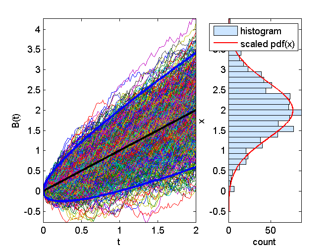

Contents
function demo_arithmeticBrownianMotion(M,N)
demo_arithmeticBrownianMotiondemo_ArithmeticBrownianMotion: simulation
and properties of arithmetic Brownian Motion
SYNTAX:
demo_arithmeticBrownianMotion(M,N)
INPUT:
M : Number of simulations
N : Number of steps in simulationsEXAMPLE:
M = 1; N = 100; demo_arithmeticBrownianMotion(M,N) M = 25; N = 100; demo_arithmeticBrownianMotion(M,N) M = 100; N = 100; demo_arithmeticBrownianMotion(M,N) M = 1000; N = 100; demo_arithmeticBrownianMotion(M,N)
Simulate in [t0,t0+T]
t0 = 0.0; T = 2.0;
Parameters for the Arithmetic Brownian Motion
B0 = 0.0; mu = 1.0; sigma = 0.5; [t,B] = simulateArithmeticBrownianMotion(M,N,t0,B0,T,mu,sigma);
Plot the simulated trajectories
if (M < 30) plot(t,B'); axis('tight'); xlabel('t'); ylabel('B(t)') else % sufficiently large sample for E[BT] and stdev[BT] BT = B(:,end); % final value of each trajectory subplot(1,10,8:10); modelPdf = @(x)(normpdf(x,mu*T,sigma*sqrt(T))); scale = 0; graphicalComparisonPdf(BT,modelPdf,scale,min(B(:)), max(B(:))) view(90,-90); % plot trajectories subplot(1,10,1:6); plot(t,B','LineWidth',1); axis('tight'); xlabel('t'); ylabel('B(t)') hold on % plot stdev[B(t)] expected_B = B0 + mu*t; plot(t,expected_B,'k','LineWidth',3); % plot stdev[B(t)] std_B = sigma*sqrt(t); alpha = 2; plot(t,expected_B - alpha*std_B,'b','LineWidth',3); plot(t,expected_B + alpha*std_B,'b','LineWidth',3); hold off end